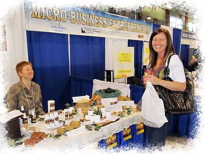

The Micro Business Development program is unique to our province. Our program uses small groups, called peer-lending circles, which bring together six to nine budding entrepreneurs and provide the information and support necessary to successfully start and run a micro-business. Many of these enterprises are home-based but several have grown to move into their own locations with the entrepreneurs reaping the financial rewards and lessons that go along with the process. Our groups meet monthly and share successes and challenges, act as sounding boards, and provide a business network for its members. Individual and group business counselling is available and we offer monthly professional development workshops with guest speakers. We can offer a small start-up loan of up to $2500 with successive loans of up to $10,000 to start or expand a new or existing micro-business.
We currently have two sites in the province; one in St. John's and one in Grand Falls-Winsor